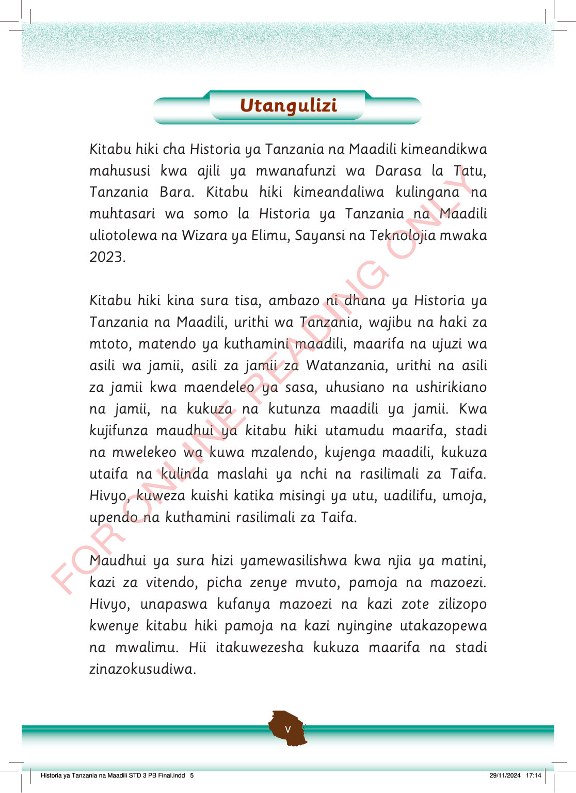

Utangulizi.
Kitabu hiki cha Historia ya Tanzania na Maadili kimeandikwa mahususi kwa ajili ya mwanafunzi wa Darasa la Tatu, Tanzania Bara.
Kitabu hiki kimeandaliwa kulingana na muhtasari wa somo la Historia ya Tanzania na Maadili uliotolewa na Wizara ya Elimu, Sayansi na Teknolojia mwaka 2023.
Kitabu hiki kina sura tisa, ambazo ni dhana ya Historia ya Tanzania na Maadili, urithi wa Tanzania, wajibu na haki za mtoto, matendo ya kuthamini maadili, maarifa na ujuzi wa asili wa jamii, asili za jamii za Watanzania, urithi na asili za jamii kwa maendeleo ya sasa, uhusiano na ushirikiano na jamii, na kukuza na kutunza maadili ya jamii.
Kwa kujifunza maudhui ya kitabu hiki utamudu maarifa, stadi na mwelekeo wa kuwa mzalendo, kujenga maadili, kukuza utaifa na kulinda maslahi ya nchi na rasilimali za Taifa.
Hivyo, kuweza kuishi katika misingi ya utu, uadilifu, umoja, upendo na kuthamini rasilimali za Taifa.
Maudhui ya sura hizi yamewasilishwa kwa njia ya matini, kazi za vitendo, picha zenye mvuto, pamoja na mazoezi.
Hivyo, unapaswa kufanya mazoezi na kazi zote zilizopo kwenye kitabu hiki pamoja na kazi nyingine utakazopewa na mwalimu.
Hii itakuwezesha kukuza maarifa na stadi zinazokusudiwa.
Historia ya Tanzania na Maadili STD 3 PB Final.indd 5
29/11/2024 17:14